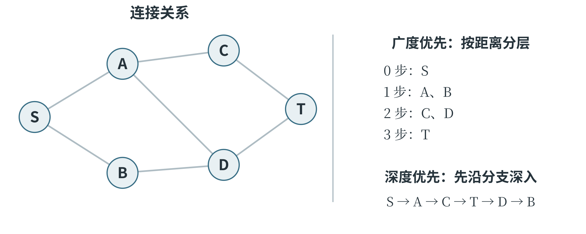
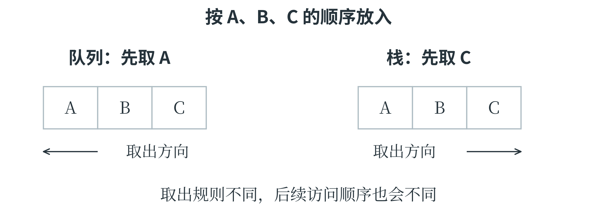

4.4 树、图与搜索
用连接关系表示问题
一个对象只列出自身特征，有时还不够。例如，路线问题需要知道哪些路口可以互通，社交网络需要知道哪些人有联系。图由一组顶点和连接它们的边组成，顶点也常称为结点。道路只能单向通行时，用带箭头的有向边表示；可以双向通行时，可以使用无向边。边还可以附带距离、费用等数值，称为权重。沿着边依次经过顶点，形成一条路径。本节讨论无权图时，路径长度按经过的边数计算。沿不同的边经过一串顶点，除起点与终点重合外不重复经过顶点，就形成一个环。沿一条路走过去再原路退回，不算这里所说的环。
树是一种没有环、且所有顶点连通的无向图；若选定一个根结点，就可以按离根的层次讨论父结点、子结点和叶结点。父子关系描述相邻层次，叶结点则没有子结点。计算机的目录层级和决策树都借用了这种结构，但具体数据是否真是一棵树，还要看有没有额外连接。
图可以用邻接表保存：每个顶点对应一个列表，记录从它出发可以直接到达的邻居。下面这张无向图中，S 与 A 相连，就在 S 的列表中写 A，也在 A 的列表中写 S。邻居顺序还规定了后面搜索时的先后次序。
graph = {
"S": ["A", "B"],
"A": ["S", "C", "D"],
"B": ["S", "D"],
"C": ["A", "T"],
"D": ["A", "B", "T"],
"T": ["C", "D"]
}

搜索是在候选位置或状态中，按一定顺序寻找目标；遍历则着重于按规则访问所有需要处理的结点。图中可能有环，多个顶点也可能通向同一个顶点，因此通常要保存一个“已经发现”的集合，避免反复进入同一处。从 S 能访问哪些顶点，还取决于它们与 S 是否连通；若要求遍历整张不连通的图，需要再从尚未访问的顶点开始搜索。
广度优先搜索
广度优先搜索，简称 BFS，先处理起点，再处理离起点一条边的顶点，然后处理两条边、三条边的顶点。它使用队列保存等待处理的顶点：先进入队列的先出来，这种顺序称为先进先出。Python 的 collections.deque 可以高效地从一端加入、另一端取出。
from collections import deque
def bfs(graph, start):
queue = deque([start])
distance = {start: 0}
order = []
while queue:
node = queue.popleft()
order.append(node)
for neighbor in graph[node]:
if neighbor not in distance:
distance[neighbor] = distance[node] + 1
queue.append(neighbor)
return order, distance
order, distance = bfs(graph, "S")
print(order)
print(distance["T"])
访问顺序为 S、A、B、C、D、T，S 到 T 的最短距离为 3。最初队列为 [S]；取出 S 后，加入 A、B；取出 A 后，加入 C、D，队列变为 [B, C, D]。处理 B 时，D 已经在 distance 中，不会再次入队。将“已发现”标记放在入队时完成，可以避免一个结点被不同邻居反复加入。这个字典同时保存距离和已发现标记。首次发现邻居时，它比当前结点多经过一条边，所以距离加 1。由于队列先处理较近的层，第一次发现一个结点时，不会漏掉一条边数更少的路径。这就是 BFS 能在无权图中求最短路径长度的原因。
若每条边的耗时不同，边数少不等于总耗时少，上述程序便不能直接用来求最短耗时。
若还需要输出完整路线，可以在首次发现邻居时记录它来自哪个结点。例如，将 parent[neighbor] 设为 node；找到 T 后，从 T 沿这些记录回到 S，再把顺序反转。距离字典回答“有多远”，前驱记录回答“怎样走到那里”，两者保存的信息不同。
把最短距离还原成一条路线
如果只记录距离 3，仍不知道该经过哪些结点。找到一个新结点时，可以同时记下它是从哪里第一次到达的，把这个来源称为前驱。在本例中，A 和 B 的前驱是 S，C 和 D 的前驱是 A，T 的前驱是 C。由 T 沿前驱反向追溯，得到 T、C、A、S；反转后就是从起点出发的路线。下面的函数仍使用前面定义的 graph 和已经导入的 deque。字典 parent 同时承担已发现标记和前驱记录，起点的前驱设为 None，表示回溯到此结束。
def shortest_path(graph, start, goal):
queue = deque([start])
parent = {start: None}
while queue:
node = queue.popleft()
if node == goal:
break
for neighbor in graph[node]:
if neighbor not in parent:
parent[neighbor] = node
queue.append(neighbor)
if goal not in parent:
return []
path = []
node = goal
while node is not None:
path.append(node)
node = parent[node]
return path[::-1]
print(shortest_path(graph, "S", "T"))
# ['S', 'A', 'C', 'T']
回溯循环不再查看图中所有邻居，只沿已经保存的前驱走。前驱记录把搜索过程中的一个选择保留下来，因此搜索结束后仍能还原路线。如果邻居的访问顺序改变，可能得到另一条同样短的路线；无权图中最短边数仍为 3。要判断程序对不对，应看任务是否允许多个正确答案。
图 4-6 还比较了队列和栈的取出顺序。A、B、C 按这个顺序放入，队列先取出 A，栈先取出 C。搜索顺序不是由字母本身决定的，而是由数据结构的取出规则与放入顺序共同决定的。

深度优先搜索
深度优先搜索，简称 DFS，沿着一条尚未访问的路线尽量深入，到没有可继续访问的邻居时，再退回上一个结点，尝试其他分支。递归调用恰好能够保存“退回哪里继续”的信息。
def dfs(graph, start):
visited = set()
order = []
def visit(node):
visited.add(node)
order.append(node)
for neighbor in graph[node]:
if neighbor not in visited:
visit(neighbor)
visit(start)
return order
print(dfs(graph, "S"))
按给定邻接表，顺序为 S、A、C、T、D、B。从 S 进入 A，再进入 C、T、D、B；B 的邻居都已经访问过，于是返回 D，继续检查 D 尚未检查完的邻居。递归结束不表示重新从起点开始，而是回到发起这次调用的位置。这一点与第二章中函数调用的执行顺序相同。
DFS 也可以用栈实现。栈是后放入的先取出，称为后进先出；它与队列的顺序不同。如果希望迭代写法产生与上述递归相同的顺序，还需注意邻居的压栈次序。
DFS 找到的第一条路线未必最短，因为它可能先走进一条很长的分支。BFS 与 DFS 都能检查可达性，选择哪一种，要看目标是逐层找近处，还是深入检查分支结构。